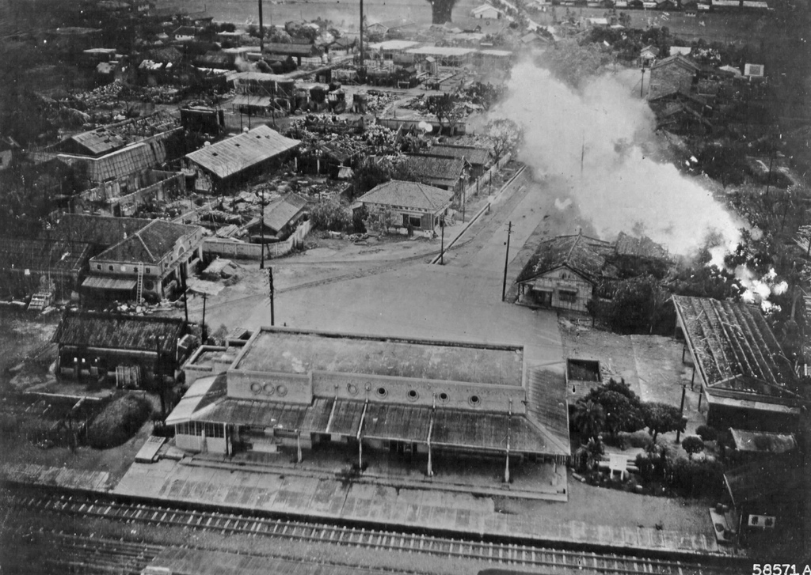

1903年5月25日：設置「苗栗停車場」（日語：苗栗－／びょうりつ－〔べうりつ－〕，木造站房，為第一代苗栗車站。
1930年：因第一代木造站房不敷使用，改建為磚造車站，苗栗車站進入第二代車站時期。
1935年4月21日：苗栗站房與苗栗機關庫於新竹－臺中地震震毀，之後重建。
1937年4月24日：新苗栗機關庫車庫重建落成。
1943年：因太平洋戰爭爆發，苗栗車站遭空襲轟炸擊中全毀，之後再次重建。
1954年：苗栗車站重設天橋。
1955年8月：因行車班次增加影響整個路線之配車秩序，所以第一月台進行改建，其中天橋拆除，新建地下道，改建完成後，改由地下道通往第二月台。
1975年11月：因第二代磚造車站不敷使用，改建為二樓RC鋼筋混凝土弧形平面車站，苗栗車站進入第三代車站時期。
1978年：整修二樓及站前門面，並增加方形柱狀鐘塔等建設。
1997年：山線雙軌化工程期間，再次整修為現在的鋁合金烤漆板門面及月台改善、擴建，站內仍可見弧形屋頂。
1998年10月11日：山線雙軌化工程通車典禮於本站舉行，並於10月16日進行列車改點，大幅縮短行車時間。
1999年6月10日：苗栗鐵道文物展示館啟用。
2006年11月1日：福安地下道啟用。
2010年10月29日：跨站式車站工程動土。
2013年5月30日：啟用多卡通刷卡機。
2013年10月16日：第三代車站關閉，跨站式車站開始試營運。
2013年10月25日：跨站式站房正式啟用，苗栗車站進入第四代車站時期。
2014年：台鐵局計畫委託民間經營活化苗栗鐵道文物展示館，公開徵求「苗栗縣苗栗火車站鐵道博物館興建營運移轉案」民間投資者。